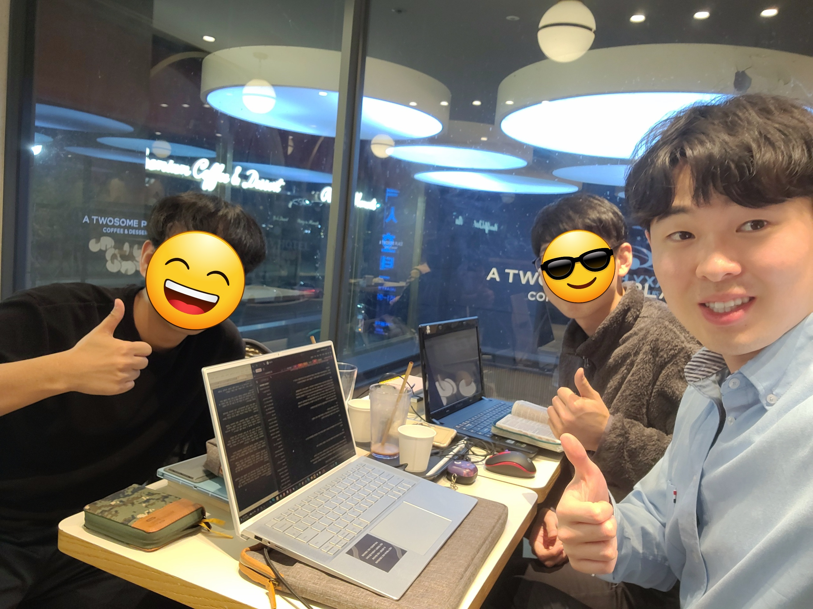

이런 저의 모습가운데, 최근 묵상하게 된 말씀이 있습니다. 귀신 들린 아이의 아버지가 예수님께 아이를 고쳐 달라고 한 이야기입니다.
마가복음 9:14-20
14 이에 그들이 제자들에게 와서 보니 큰 무리가 그들을 둘러싸고 서기관들이 그들과 더불어 변론하고 있더라
15 온 무리가 곧 예수를 보고 매우 놀라며 달려와 문안하거늘
16 예수께서 물으시되 너희가 무엇을 그들과 변론하느냐
17 무리 중의 하나가 대답하되 선생님 말 못하게 귀신 들린 내 아들을 선생님께 데려왔나이다
18 귀신이 어디서든지 그를 잡으면 거꾸러져 거품을 흘리며 이를 갈며 그리고 파리해지는지라 내가 선생님의 제자들에게 내쫓아 달라 하였으나 그들이 능히 하지 못하더이다
19 대답하여 이르시되 믿음이 없는 세대여 내가 얼마나 너희와 함께 있으며 얼마나 너희에게 참으리요 그를 내게로 데려오라 하시매
20 이에 데리고 오니 귀신이 예수를 보고 곧 그 아이로 심히 경련을 일으키게 하는지라 그가 땅에 엎드러져 구르며 거품을 흘리더라
본문을 보면 의아한 부분이 있습니다. 마가복음 6장에서 제자들은 예수님께 귀신 쫒는 권능을 받고 그 사역을 감당했는데, 오늘 본문에서는 제자들이 귀신을 쫒지 못하고 있다는 부분입니다. 게다가 예수님은 제자들이 믿음이 없다고 책망하십니다(20). 예수님을 위해 가족과 생업을 버린 제자들이 그분을 믿지 않았다는 게 의아하게 여겨집니다. 제자들은 무엇을 믿었던 걸까요.

<카페에서 동아리원과 함께>
본문을 통해 제자들을 살펴보면 꽤 신기한 모습을 볼 수 있습니다. 먼저 지금 제자들이 서기관들과 "변론" 중이라는 것입니다(14). 변론이 무엇이 신기하냐고 할 수 있지만, 지금 예수님이 오신 이 현장에서 귀신들린 아이는 보이지 않고 제자들은 서기관들과 말로 싸우고 있었다는 내용은 신기한 부분인 것 같습니다. 현장에 아이가 없기에, 예수님은 아이를 찾으시고 사람들은 아이를 데려옵니다(20). 제자들이 정말 하나님을 믿었더라면 기도함으로 아이를 붙잡고 있어야 할 텐데, 하나님이 아닌 자신을 의지하였기에, 어느덧 제자들은 아이를 내버려 두고 자기를 지키기 위해서 변론하고 있습니다.
자기를 지키려 변론한다는 말 안에는 자기의 힘으로 그 일을 감당하려 한다는 사실이 내포된 것 같습니다. 스스로, 마치 어떤 것을 할 수 있다고 여기기에 스스로를 변호하게 되고, 결과 자체에 매이게 됩니다. 분명 제자들도 하나님을 위해 사역하고 아이를 고치고자 했지만, 그 마음안에 하나님을 향한 마음이 아니라 자기에게 근거를 둔 마음이 자라게 되었던 것 같습니다. 하나님이 아닌 자기의 능력이나 경험, 자기의 어떠함을 더 믿게 된 것이죠. 그렇기에 어느덧 결과로 자기를 드러내고, 결과로부터 자기를 보호하고자 하는 마음이 자라게 됩니다. 본문 뒤에 34절에 제자들이 누가 크냐 하고 싸우는 부분은, 제자들의 마음의 중심이 어디에 있는지를 여실하게 보여줍니다.
 <공동체에서 동아리원들과>
<공동체에서 동아리원들과>
결과를 바라보며 낙담하고 스스로를 보호하는 제자들의 모습을 통해, 제 안에도 이와같이 하나님 없이 내 힘으로 할 수 있다고 생각하는 마음이 있었는지 돌아보게 됩니다. 남보다 높아지기를 원하고, 인정받기를 원하는 마음안에, 하나님의 도움 없이 스스로 할 수 있다고 생각하는 교만이 있었다는 것을 보게 됩니다. 분명 하나님을 위해 시작한 일이라 하더라도, 지금까지 얼마나 많은 헌신을 감당했는지에 상관없이, 내 마음의 중심을 지키는 일은 여전히 어려운 것 같습니다.
이 어려운 문제에 대해서 예수님은 "기도"를 대안으로 말씀하십니다(29). 제자들도 당연히 기도했겠지만, 단순히 물리적인 시간으로 기도하는 것을 넘어서서, 정말 "나"를 의지하는게 아니라 "하나님"을 의지함으로 기도하는 그 마음을 요구하십니다. 스스로 할 수 있다고 여기며, 결과에 매여서 기뻐하거나 낙담하지 않고 주님만을 의지함으로 기도하는 자가 되기를 원합니다. 내가 한 게 없지만 마치 내가 한 것처럼 생각하는 무지한 교만의 마음이 깨지고, 진정 주님을 의지함으로 가장 낮은 자가 되기를 마다하지 않고 섬기는 저와 모두가 되기를 소망합니다.
 <간사님들과 벗꽃사진>
<간사님들과 벗꽃사진>
 <한동대 벚꽃사진 with 간사들>
<한동대 벚꽃사진 with 간사들> <한동대 꽃 사진>
<한동대 꽃 사진>
 <공동체 이사 기도편지>
<공동체 이사 기도편지>